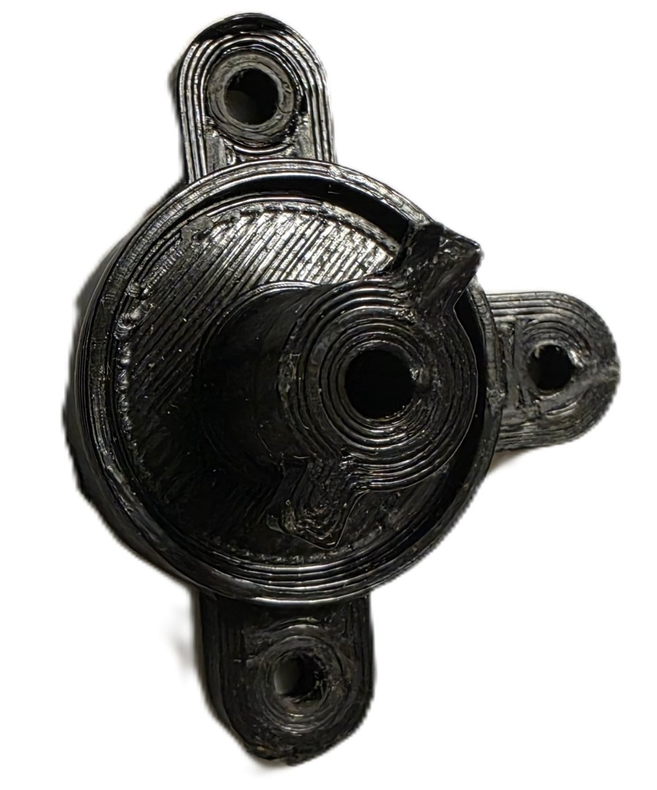
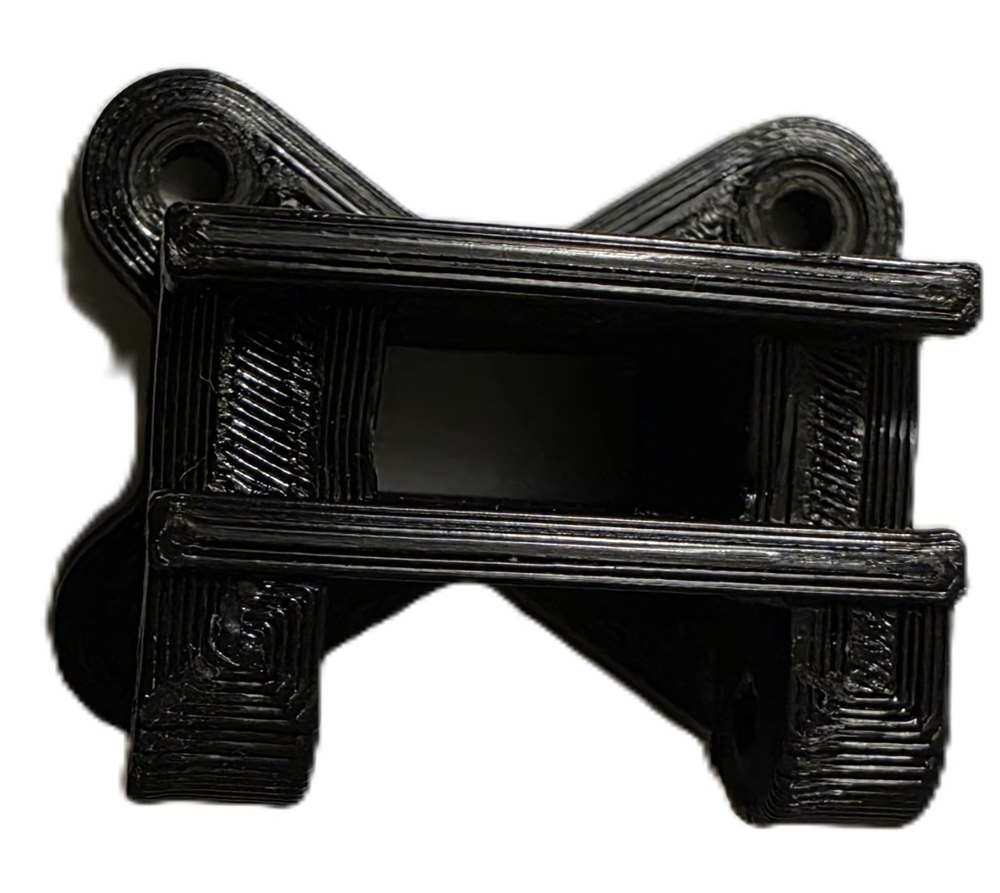
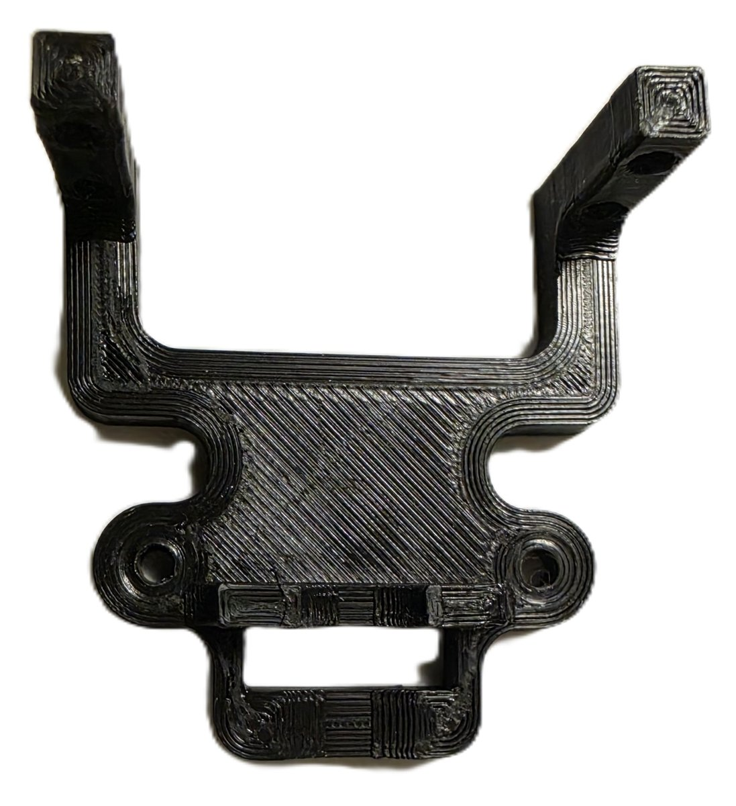
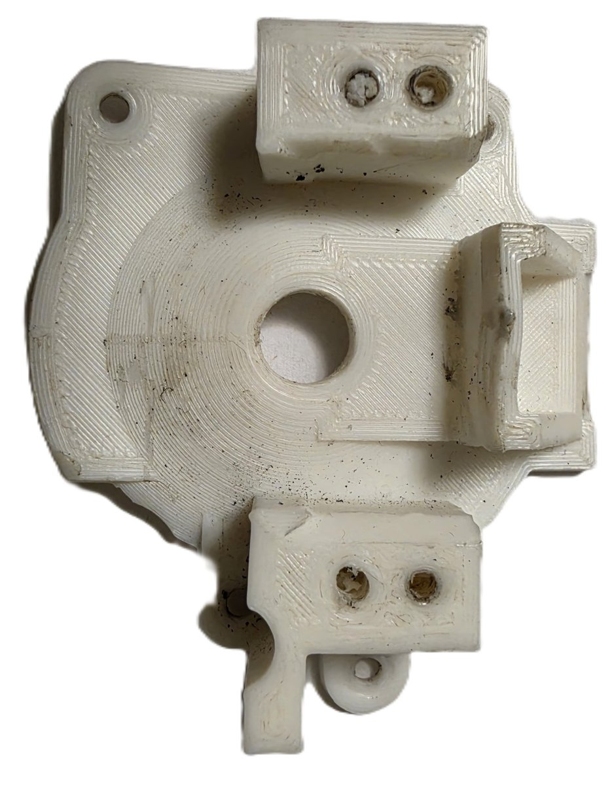
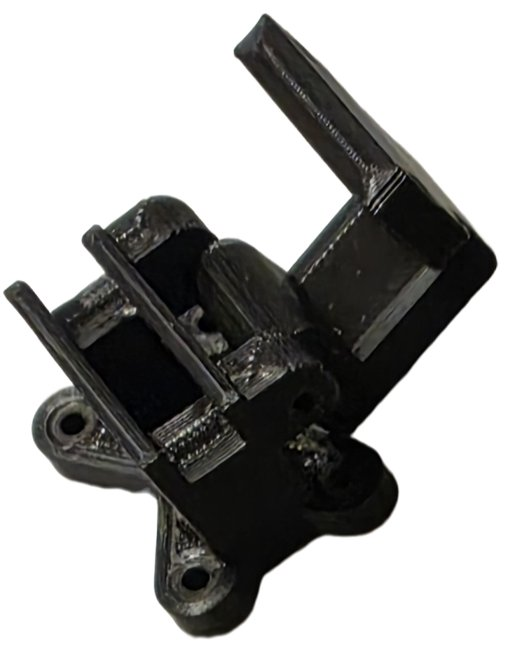
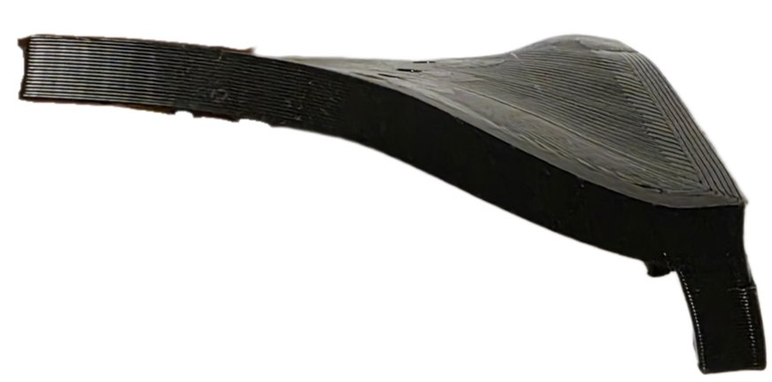
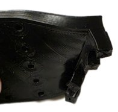

These are the actual print files I used for the build: one tab for the full assembly and one for each part, grouped as common parts, the airflow-direction side (Flow) and the temperature-control side (Temp). Drag to rotate, scroll to zoom. STL downloads are below the viewer.
The full relocated climate-control structure: 14 parts across three groups: shared common parts, the airflow-direction control side (kept its cable-actuated mechanism), and the temperature-control side (converted to servo + potentiometer control).
Common part. Encloses and locates circuitry/wiring for the front-facing control cluster.
Common part. Shared housing structure that both control knobs mount through.
Common part. Structural bracket tying the storage bay to the relocated A/C box.
Common part. Mirrored bracket for the right side of the same joint.
Airflow-direction control side. Structural base the rest of this sub-assembly builds on.
Airflow-direction control side. Outer housing shell that seats against the dash.
Airflow-direction control side. Produces the tactile click feel as the vent-direction knob is turned.
Airflow-direction control side. Gear interface translating knob rotation into the mechanism's motion.
Airflow-direction control side. Retains and routes the relocated actuator cable.
Airflow-direction control side. Closes over the cable holder to keep the run captured.
Temperature-control side. Outer housing shell on this side.
Temperature-control side. Interface rod linking the dash-facing knob to the internal mechanism.
Temperature-control side. Mounts the potentiometer that replaces the stock cable mechanism.
Temperature-control side. The servo-control sensing component itself, seated in the holder in place of the stock cable takeoff.
My 2003 Mitsubishi Lancer ES came with a single-DIN radio opening. I wanted a double-DIN head unit, which is about twice as tall, but the factory climate controls sat right under the radio bay, where the extra height needed to go. So I pulled the A/C control assembly out and designed a new structure that moved it lower in the dash, keeping the vents, the cable and servo linkages, and the two knobs working.
I modeled every part in SolidWorks and printed them at home on a Creality Ender 3 V2. While I was at it, I also fixed a common problem on this car, where the temperature knob mechanism seizes and snaps its drive rod, by switching that side from a cable to a servo and potentiometer.
I split the assembly into lots of small parts instead of one or two big shells:
On the temperature side, I designed the model with room for a potentiometer instead of the original cable mechanism. I did this to fix a known problem on the 2003 Lancer: the temperature knob mechanism seizes, and forcing it snaps the plastic drive rod, which leaves the cable mechanism useless.
By using a servo to drive the blend door and a potentiometer to read the knob, I left no cable or rod that could break. The electronics also fit in with everything else I was putting into the dash for the new head unit. The servo bracket, the potentiometer coupling and the control board are covered in detail in my HVAC blend-door project.
The airflow-direction knob (which picks the vents) doesn't have this problem, so I left its cable. However, I still rebuilt it from scratch, with its own click-detent generator, gear hub, and a printed cable holder and cover for the relocated cable.
Click a part to open it in the 3D viewer.
| Group | Part | Role |
|---|---|---|
| Common | Front circuit housing | Encloses and locates circuitry/wiring for the front-facing control cluster |
| Main knob housing | Shared housing structure that both control knobs mount through | |
| Storage-to-A/C bracket (left) | Structural bracket tying the storage bay to the relocated A/C box | |
| Storage-to-A/C bracket (right) | Mirrored bracket for the right side of the same joint | |
| Flow-direction control side | Base plate | Structural base the rest of this sub-assembly builds on |
| Hemispherical housing | Outer housing shell that seats against the dash on this side | |
| Click-detent generator | Produces the tactile click feel as the vent-direction knob is turned | |
| Gear hub | Gear interface translating knob rotation into the mechanism's motion | |
| Cable holder | Retains and routes the relocated actuator cable for this control | |
| Cable holder cover | Closes over the cable holder to keep the run captured | |
| Temperature control side | Hemispherical housing | Outer housing shell on the temperature-control side |
| Knob rod | Interface rod linking the dash-facing knob to the internal mechanism | |
| Potentiometer holder | Mounts the potentiometer that replaces the stock cable mechanism | |
| Potentiometer | The servo-control sensing component itself, seated in the holder above in place of the stock cable takeoff |
I printed everything on a stock Creality Ender 3 V2. Since it has no enclosure, room temperature and drafts affected print quality. I joined the parts with screws at the reinforced points described above instead of glue or press fits, so any part can be taken out and replaced on its own.
Here are some of the parts I printed for this build:





My first full set was PLA. It was fine until a hot spell in the summer, when the inside of the parked car got well past PLA's softening point and one part warped. It wasn't a disaster, but I had to reprint it. Any FDM printer will do, but for a part that lives in a car, I'd recommend ABS or another high-temperature filament instead of PLA.
These photos show one of the warped parts after the summer:

